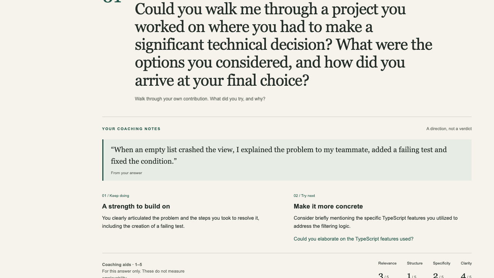

Make it your interview.
Choose a role, add an optional job description, and pick behavioral, technical or mixed practice.
A LITTLE PRACTICE. A CLEARER YOU.
A quiet place to find your words. Practice explaining your projects, get thoughtful coaching, and try again with a clearer idea of what to say.

Your words give the coach something concrete to work with.
Choose a role, add an optional job description, and pick behavioral, technical or mixed practice.
Answer in your own words. Get a strength, an improvement and a next step, with evidence quoted from your answer.
Review a recap, practice an optional follow-up, or return to saved sessions. Skip or stop whenever you need.
JUST YOU & YOUR LOCAL COACH
Gemma runs on your computer through Ollama. Practice answers and job descriptions go to the local runtime. Finished sessions stay in your browser until you delete them.
No cloud AI fallback, analytics or remote fonts in the practice app. This public page showcases the project; it does not collect interview answers.
AI coaching can be inaccurate. Exact quote checks ground the evidence, but do not guarantee every coaching claim is correct.
Actual local Gemma 4B, with clearly labeled synthetic candidate text. Includes coaching, skipping, an early recap, saved review and deletion.
Silent screen recording · 4 min 26 sec · Actual model waits are retained. No follow-up was offered in this run. The full five-question and follow-up flows were verified separately in browser tests.
YOUR ROOM. YOUR PACE.
Run the working coach on your own computer. You'll need Node.js 22.12+, npm and Ollama. Download Gemma once, then practice locally.
Get the setup guide ↗AFTER INSTALLING OLLAMA & CLONING THE REPO
npm ci
npm run model:serve
# In another terminal:
npm run model:pull
npm run build
npm startOpen http://127.0.0.1:3000
Model download ≈ 3.3 GB. Tested on an 8 GB Apple M1; generation can be slow or time out. Read the setup guide for details.
BUILT WITH CARE. CHECKED IN PRACTICE.
Accessibility checks cover setup, session, feedback and recap. Model quality was reviewed on synthetic examples; friend feedback and broader device testing are still pending. Read the verification notes ↗